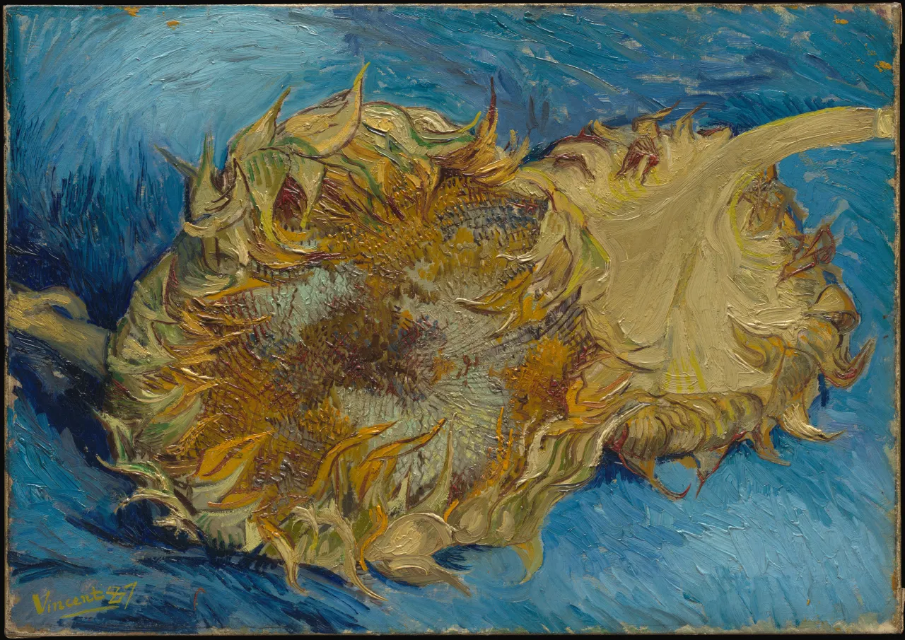

Your web,
in grey.
Turn the sites you choose grayscale, videos included. Get the color back whenever you want.
Get the extension For Chrome, Firefox & Zen
You pick what goes grey.
By website
Instagram, X, and LinkedIn start in grey. Add YouTube or any other website from the popup in one click.
By tab
Keep one tab in full color while the rest follow your site settings. Or make a single tab grey.
By the minute
Pause grayscale everywhere for 2, 5, or 10 minutes. It comes back on its own.
Get Go Grey.
Download a desktop build from GitHub and follow the steps for your browser.
Chrome installation
Unzip the Chrome download. Open chrome://extensions, turn on Developer mode, then choose Load unpacked and select the unzipped folder.
Firefox & Zen installation
Unzip the Firefox download. Open about:debugging#/runtime/this-firefox, choose Load Temporary Add-on, and select manifest.json in the folder. This build stays installed until you restart your browser.